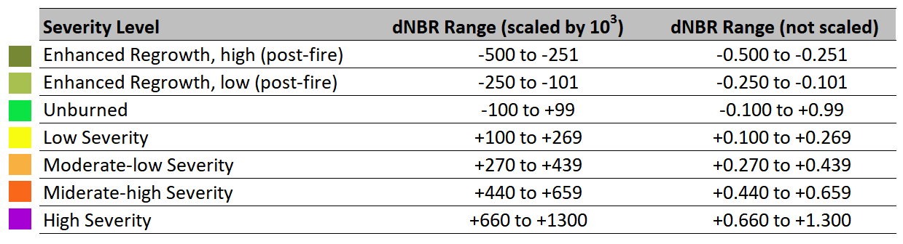

Oefeningen
Onderstaande oefeningen kunnen gebruikt worden om de principes uit Practicum 4 verder in te oefenen.
Oefening 4.1 - Brand-index
Niveau: gemiddeld
In volgende oefening bekijken we een index die de gebieden aangetast door bosbranden belicht: de Normalized Burn Ratio (NBR). Door de NBI te berekenen voor en na natuurbranden, kan een spatiale inschatting worden gemaakt van de ernst van beschadiging aan de omgeving.
De NBR wordt op een vergelijkbare manier als de NDVI berekend, waarbij het de rode band vervangen werd door een SWIR-band:
In volgende oefening maken we een analyse van een grote bosbrand (genaamd 'Camp Fire') die op 8 november nabij Paradise in Californië woedde (info hier). Dit doen we aan de hand van Landsat-8 beelden.
Stappenplan
-
Start met een nieuwe script. Kopieer en plak alvast de Cloud-mask functie voor Landsat-8 (zie vorig practicum):
function maskL8sr(image) { // Gebaseerd op de QA-waarde, wat de uitkomst is van het FMASK algoritme // QA-waarde 4 komt overeen met wolken var cloudShadowBitMask = (1 << 3); var cloudsBitMask = (1 << 4); // Get the pixel QA band. var qa = image.select('QA_PIXEL'); // Both flags should be set to zero, indicating clear conditions. var mask = qa.bitwiseAnd(cloudShadowBitMask).eq(0) .and(qa.bitwiseAnd(cloudsBitMask).eq(0)); return image.updateMask(mask); } -
Filter de L8 (Surface Reflectance, Tier 1) collectie op basis van volgende ROI:
var ROI = ee.Geometry.Polygon( [[[-121.63966294798034, 39.877127888100304], [-121.63966294798034, 39.71622101257041], [-121.35470506223815, 39.71622101257041], [-121.35470506223815, 39.877127888100304]]], null, false); -
Maak een functie aan waarin de NBR-index wordt berekend voor de Landsat 8 banden. Gebruik de SWIR-2 band. (tip). Voeg de index toe aan de collectie met de .map()-functie.
-
Filter de collectie verder met een maximale 'CLOUD_COVER' van 30% en pas de cloud mask toe.
-
Maak nu 2 beelden aan binnen dezelfde periode van het jaar. Clip naar de ROI (met .clip()) en voeg ze toe als Normale Kleuren:
- 1 Beeld voor de brand: een mediaan binnen de periode 1 mei 2018 - 30 juni 2018
- 1 Beeld na de brand: een mediaan binnen de periode 1 mei 2019 - 30 juni 2019
-
Visualiseer nu ook de NBR's voor beide beelden (gebruik de range van [0,1])
-
Om een indicatie te krijgen van de brandernst, dient het verschil tussen beide NBR's te worden berekend. Voer hiervoor de som NBR_voor - NBR_na. Vermenigvuldig het resultaat met 1000 om een betere schaling te verkrijgen. Geef het de naam "NBR_verschil". Voeg de index ook als zwart-wild beeld toe aan het beeld, met een stretch tussen [-200, 1000]
-
Visueel vallen er alvast heel wat zaken af te leiden. Echter voor verdere toepassing is het beter om de resulterende klassen op te delen, zoals in onderstaande tabel, opgesteld door de United States Geological Survey (USGS).
{kind=link}

Burn severity klassen, met bijhorende grenzen volgens het verschil in NBR-index (dNBR). Opgesteld door de USGS. (Bron: [UN-spider])
Om het NBR-verschil beeld om te zetten naar deze discrete klassen, dienen we het beeld te reclassificeren. In Earth Engine doen we dit volgens een .where(), functie. Pas onderstaande code aan in je script, om dit toe te passen. Eveneens werd de bijhorende palette meegegeven.
// Remap values. gt= greater than (>), lte = less then or equal (<=)
var Burn_severity = ee.Image(1).clip(ROI) //Initialiseert een leeg beeld
.where(NBR_verschil.gt(-500).and(NBR_verschil.lte(-251)), 1)
.where(NBR_verschil.gt(-250).and(NBR_verschil.lte(-101)), 2)
.where(NBR_verschil.gt(-100).and(NBR_verschil.lte(99)), 3)
.where(NBR_verschil.gt(100).and(NBR_verschil.lte(269)), 4)
.where(NBR_verschil.gt(270).and(NBR_verschil.lte(439)), 5)
.where(NBR_verschil.gt(440).and(NBR_verschil.lte(659)), 6)
.where(NBR_verschil.gt(660).and(NBR_verschil.lte(1300)), 7)
var BurnSeverity_VIS = {bands:["constant"],palette:["1b930c","98c825","00ff37","fff708","ffb716","ff7310","c20665"]}
Map.addLayer(Burn_severity,BurnSeverity_VIS, 'Burn Severity classes')
Oplossing
Script met volledige uitwerking: https://code.earthengine.google.com/77ed985d48b3ed27bbb531f1e8a4f19f
Oefening 4.2 - Herbebossing Regenwoud in Aimores, Brazilië
OPGELET!: deze oefening werd opgesteld met de Collectie-1 Landsat beelden: Landsat-8, Landsat-7. Dus maak deze best adhv deze collecties (er worden geen nieuwe beelden meer in deze collectie toegevoegd, de historische beelden zullen beschikbaar blijven).
Info: Examenopdracht 2019-2020.
Tip: Gebruik van NDVI als indicator van ontbossing
Context
Voor deze opdracht trekken we naar Aimores, in de Braziliaanse provincie Minas Gerais. Dit gebied bestond honderden jaren geleden uit uitgestrekt tropisch bos, het Atlantische woud, en bevat een buitengewoon grote biodiversiteit. In de 20e eeuw werd het leeuwendeel van dit gebied echter ontbost, waardoor naar schatting slechts 15% van het Atlantische woud is overgebleven.
In 1999 besloot een koppel om het heft in eigen handen te nemen door het starten van een herbebossingsproject in het gebied, met groot succes.
Gegeven:
-
Afbakening van het projectgebied (als Shape-file (Studiegebied).).
-
Tijdstip 1: 2000. Hiervoor dien je gebruik te maken van een Landsat-7 beeld. OPMERKING: je kunt in dit geval nog gebruik maken van de Collectie 1 (zie link), ondanks deze als 'deprecated' gelabeld is.
-
Tijdstip 2: 2020. Hiervoor maak je gebruik van een Landsat-8 beeld, Collectie 1.
-
Cloudmask-functie voor L457 (Collectie 1):
var cloudMaskL457 = function(image) {
var qa = image.select('pixel_qa');
// If the cloud bit (5) is set and the cloud confidence (7) is high
// or the cloud shadow bit is set (3), then it's a bad pixel.
var cloud = qa.bitwiseAnd(1 << 5)
.and(qa.bitwiseAnd(1 << 7))
.or(qa.bitwiseAnd(1 << 3));
// Remove edge pixels that don't occur in all bands
var mask2 = image.mask().reduce(ee.Reducer.min());
return image.updateMask(cloud.not()).updateMask(mask2);
};
- Cloudmask-functie voor L8 (Collectie 1):
function maskL8sr(image) {
// Bits 3 and 5 are cloud shadow and cloud, respectively.
var cloudShadowBitMask = (1 << 3);
var cloudsBitMask = (1 << 5);
// Get the pixel QA band.
var qa = image.select('pixel_qa');
// Both flags should be set to zero, indicating clear conditions.
var mask = qa.bitwiseAnd(cloudShadowBitMask).eq(0)
.and(qa.bitwiseAnd(cloudsBitMask).eq(0));
return image.updateMask(mask);
}
Gevraagd:
Maak een beeld aan, waar voor elke pixel te zien is of er vegetatie is bijgekomen of verdwenen tussen 2000 en 2020 binnen het projectgebied.
Tips:
-
Maak zelf een beeld aan per jaar aan waar de wolkbedekking ontbreekt of gemaskeerd is.
-
Gebruik een gepaste index.
-
De bandverdeling van Landsat 7/8 is verschillend! Houd hier rekening mee.
Oplossing
Script: https://code.earthengine.google.com/2a3fec22e58b9d8cc2f508606b151726
Oefening 5.3 - De Enhanced Vegetation Index (EVI)
De EVI index
De EVI is gelijkaardig aan de NDVI daar het gebruikt wordt om de aanwezigheid (of ‘greenness’) van vegetatie a.d.h.v. satellietbeelden te kwantificeren. Het werd ontwikkeld om aan enkele “limitaties” van de ndvi te voldoen:
- EVI is gevoeliger voor gebieden met hogere biomassa
- EVI reduceert de invloed van de atmosferische condities
- EVI corrigeert de ‘canopy background noise’, die bij NDVI voorkomt
De EVI is het meest gebruikte alternatief voor de NDVI.
De EVI wordt berekend als volgt:
(waarbij \(G\): een versterkende constante, \(C1,C2\) coëfficienten en \(L\) een ‘canopy background adjusment factor’)
Voor Sentinel 2, wordt deze formule: \(\(EVI_{S2} = 2.5 * {B8 - B4 \over B8 + 6 * B4 – 7.5*B2 + 1}.\)\)
Gevraagd: vergelijk de EVI met de NDVI voor het S2-beeld in Belém.